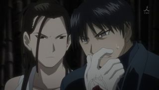

Mustang got Blinded By Truth
When he is forced to perform human transmutation and see the Truth, Roy gains the ability to transmute without a circle, clapping his hands to compensate for the sigils on his gloves being shredded. While at first he is apprehensive of this mode of alchemy, he quickly realizes that because of the absence of the need for transmutation circles he is no longer limited to flame-based alchemy on the battlefield, as seen when he transmutes a stone wall to protect himself, Riza, and Major Alex Louis Armstrong from Father's attacks.